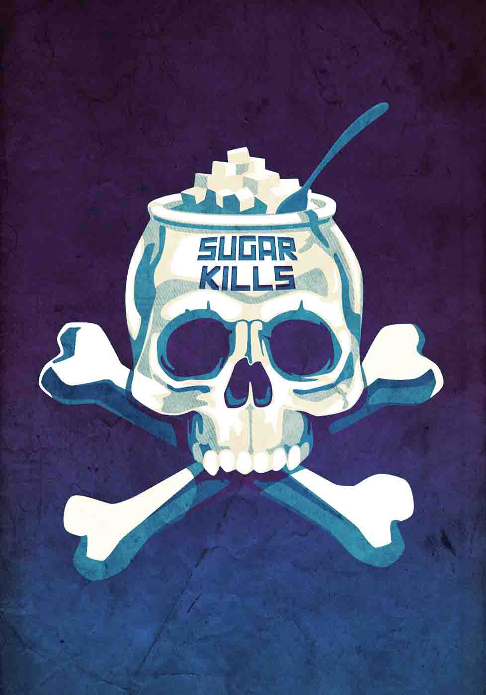

Sucrose. Fructose. They’re not just about cavities and empty calories any more.
Research suggests that sugar’s negative impact on human health results not only from its caloric value—it’s in how our bodies process sugar, and that is the same whether one is lean or obese. High sugar consumption is closely linked to metabolic syndrome, insulin resistance, diabetes, and several other chronic disorders.
Added sugars are hard to avoid in the American diet. Reduced-fat products, “naturally sweetened” items, fruit and vegetable juices, and many low-fat, low-sodium “healthy” foods are loaded with sugar.
Talk to your care team. Learn to read food labels. Question information sources. Know your risks.
